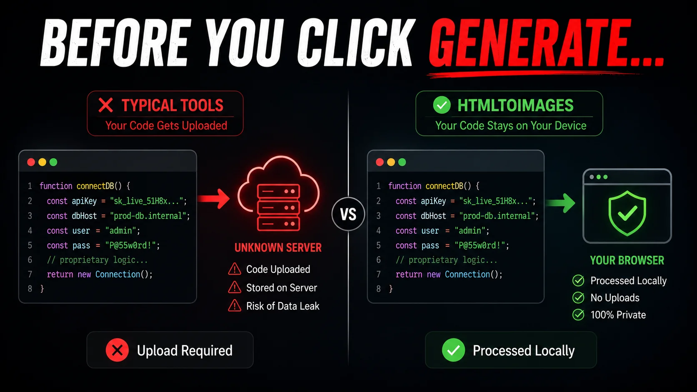
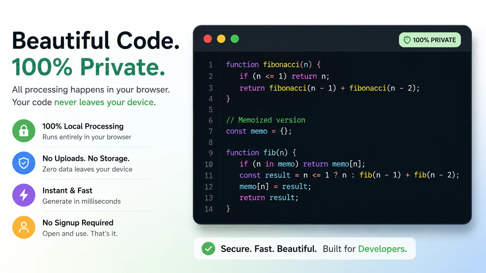

You just wrote a brilliant algorithm. You want to share it on Twitter or LinkedIn, so you search for a "code screenshot tool". You paste your code into a beautiful web app, generate a stunning image, and post it online.
But what you didn't realize is that your proprietary source code, along with an internal API key you forgot to censor, was just uploaded, processed, and potentially logged on a remote third-party server.
Every day, thousands of developers unknowingly leak confidential business logic by pasting their code into insecure online formatters. While we all want beautiful code screenshots for our social media feeds, sacrificing security for aesthetics is a massive mistake in 2026.
Today, we are exposing the fundamental flaw in how most programming screenshot apps work, and showing you the ultimate client-side alternative.
The Server-Side Trap
When you search for the best screenshot API 2026 or a generic code to image converter, you will find dozens of popular tools. But almost all of them share a fatal architectural flaw: Server-Side Rendering.
When you hit "Generate", your raw text is transmitted over the internet to their servers. Even worse, if you use a premium, account-based tool (like a snappify code screenshot tool), your snippets are intentionally stored in their cloud database indefinitely.
Just like the threats discussed in our Smartphone Privacy Exposé, transmitting your data to unknown servers always introduces risk. What if their database is breached? What if their logs are publicly accessible?
The Data Leak Risk
Never paste backend logic, AWS credentials, database URIs, or proprietary trading algorithms into a server-side web app. You are voluntarily giving away your company's intellectual property to an untrusted third party.

What About VS Code Extensions?
Many developers try to avoid web apps by installing an IDE extension to handle their screenshot coding. While this solves the upload problem, it introduces new headaches.
IDE extensions are notorious for bloating your editor's memory usage. Furthermore, they severely lack customization options. You are usually stuck with the exact theme of your editor, unable to quickly add the beautiful gradient backgrounds and drop shadows that make code truly pop on social media.
The 100% Private Alternative: Client-Side Rendering
You shouldn't have to choose between a beautiful image and the security of your codebase. This is why we built the ultimate privacy-first code screenshot tool.
Typical Screenshot Apps
- Uploads code to server
- Risks API key leaks
- Requires user accounts
- Slower processing
HTMLtoImages Tool
- 100% Local Browser Execution
- Zero Data Uploaded
- No Signup Required
- Instant Generation
Our tool leverages modern WebAssembly and JavaScript to perform all syntax highlighting and image rendering directly inside your browser's RAM. It is as secure as an offline desktop application, but as convenient as a website.
It acts like the safest code for screenshot generator available today, meaning zero bytes of your proprietary logic ever leave your device. You can even disconnect your internet after loading the page, and the tool will still work flawlessly.
Why Developers Love It
- 25+ Languages Supported: From Python and Rust to obscure configurations, our engine detects and highlights it beautifully.
- Retina Export Quality: Export at 2x or 4x scale so your text remains crystal clear on high-density mobile screens.
- Custom macOS Frames: Wrap your code in a sleek, recognizable IDE window format that developers immediately trust.

Launch The Code Screenshot Tool Now →Stop compromising your security. Whether you are creating a tutorial, asking for help on StackOverflow, or showing off on LinkedIn, protect your intellectual property. Try our tool today and see the difference.
Pro Tip: If you need to convert actual HTML/CSS layouts into images instead of just syntax-highlighted code, check out our advanced HTML to PNG tool.
People Also Ask (FAQs)
What is the best code screenshot tool for developers?
The best code screenshot tool is one that operates entirely client-side for maximum privacy, like HTMLtoImages. It renders beautiful syntax-highlighted code images directly in your browser without uploading your proprietary algorithms to a remote server.
Are online code screenshot tools safe to use?
Most online code screenshot tools are NOT completely safe because they rely on server-side rendering. This means they transmit your raw source code over the internet to their servers. You should only use client-side tools if you are capturing proprietary business logic or API keys.
How can I take beautiful code screenshots for social media?
Instead of using standard keyboard shortcuts, paste your code into a dedicated code screenshot tool like HTMLtoImages. It will automatically apply beautiful syntax highlighting, gradient backgrounds, and macOS-style window frames optimized for Twitter, LinkedIn, and Instagram.
Is there a free alternative to Snappify?
Yes. If you don't want to pay monthly subscriptions for a premium snappify code screenshot tool alternative, you can use a 100% free tool like HTMLtoImages which provides Retina-quality exports and robust language support at zero cost.
How do I format code for screenshots effectively?
To get the best programming screenshot, keep your code snippet concise (under 20 lines), remove unnecessary indentation, use a modern dark theme like Dracula or One Dark, and add generous padding around the code to make it stand out in social media feeds.
Does HTMLtoImages store my code?
No. HTMLtoImages is built on a strict privacy-first architecture. All parsing, highlighting, and image generation happens locally inside your browser's memory using JavaScript. Zero bytes of your code ever leave your device.
What programming languages are supported?
A good code to image converter supports dozens of languages. Our tool supports over 25 languages including Python, JavaScript, TypeScript, Rust, Go, HTML, CSS, and C++, automatically detecting the language syntax for perfect highlighting.
Can I use VS Code extensions to take code screenshots?
While there are extensions available, they often lack the advanced background customization, high-resolution rendering, and modern aesthetic features found in dedicated web-based tools optimized specifically for social media engagement.